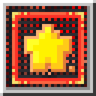

Kaleidoscope Grilling
Mechanics为《森罗物语：厨房》扩展热食、风味油料、新食材与炭火烧烤。 An expansion for Kaleidoscope Cookery featuring hot food, flavorful oils, new ingredients, and charcoal grilling. 【致谢 / Credits】 美术 / Art：Ao2333 策划 / Design：猫猫子、一年 测试 / Testing：酒狐玩具屋服务器、hutao、uwjsakdj、可可
Requires: Kaleidoscope Cookery